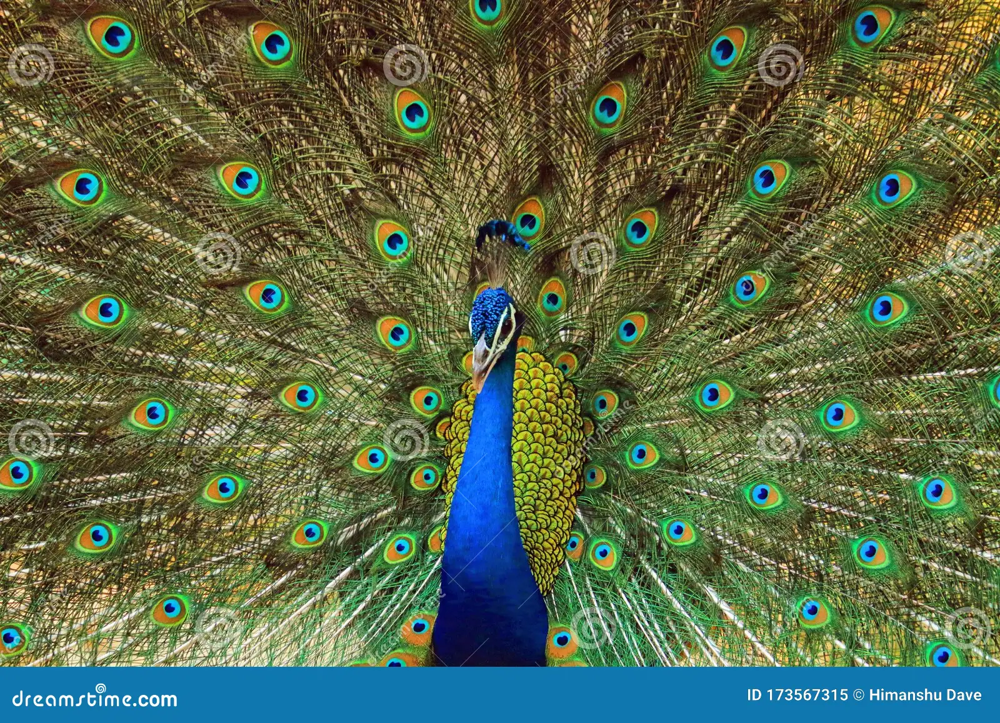

National Bird:

The Indian national bird is the Peacock, scientifically known as Pavo cristatus. It was officially declared the national bird in 1963. Peacocks are native to India and are known for their vibrant, iridescent plumage, particularly the long, elaborate train of feathers displayed by the male during courtship rituals.
They are found in all parts of the country and choose to live in Gardens and Jungles. Due to their heavy wings, Peacocks cannot fly high and like to run when there is any danger.
The Indian peacock, Pavo cristatus, the national bird of India, is a colourful, swan-sized bird, with a fan-shaped crest of feathers, a white patch under the eye and a long, slender neck. The male of the species is more colourful than the female, with a glistening blue breast and neck and a spectacular bronze-green tail of around 200 elongated feathers. The female is brownish, slightly smaller than the male and lacks the tail. The elaborate courtship dance of the male, fanning out the tail and preening its feathers is a gorgeous sight.